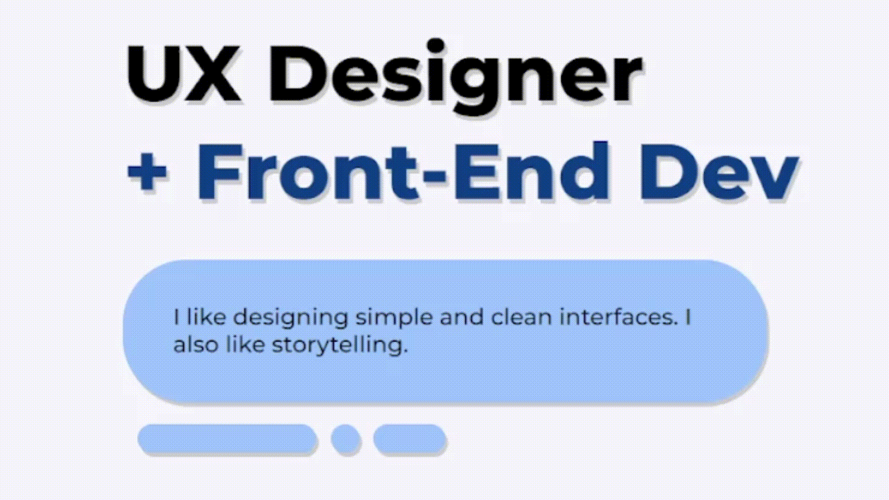

MP0 Write-Up: Portfolio Site
1. Overview & Steps:
• I started the HTML file, constructing the webpage hierarchy in terms of how I wanted to present the
content.
• I also sourced the custom font styles through Google API using their free one that is available online.
• I created a CSS file that would allow me to customize interface of the portfolio webpage.
• I was also able to add animations this way as well.
• I also created a navigation bar for easier access around the portfolio site.
• I used JS to create the slideshow effect for the case studies/projects.
2. Issue:
I had some initial issues with creating the Github repository as I had created a mistake in saving the file
location. I resolved this issue by creating a new repository and pasting my code into new files. This became
my replacement repository, allowing me to delete the previous one.
3. CSS Transition:
I added a small CSS transition that would simulate a shaking effect for some of the UI elements throughout
the portfolio site. I added this as I wanted a subtle animation that would be not too obstructive for the
viewer’s visual attention. This was achieved with a CSS animation function that uses cubic-bezier to
translate the position of the object to simulate the motion effect.

4. Idea & Future:
• In-Site Contact Form
• Background Animations
• Slideshow Index
• Slideshow Autoscroll